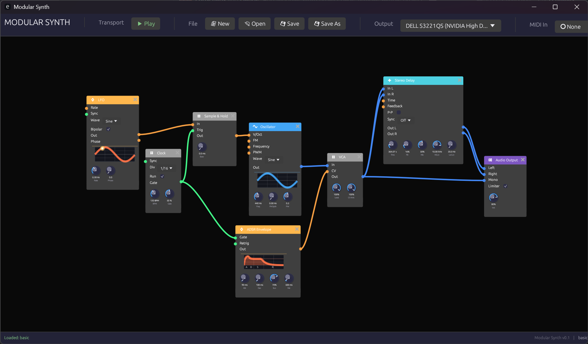

Modular Synth
Welcome to the documentation for Modular Synth, a node-based modular audio synthesizer built in Rust.
 The Modular Synth interface showing a basic patch
What is Modular Synth?
Modular Synth takes a different approach from traditional virtual modular synthesizers. Instead of emulating physical hardware with skeuomorphic interfaces, it uses a clean node-graph approach similar to Blender's node editor or Unreal Engine's Blueprints.
This design philosophy offers several advantages:
- Clarity: Signal flow is immediately visible through color-coded connections
- Flexibility: Modules can be freely arranged without physical constraints
- Efficiency: Clean UI focuses on the essentials without decorative elements
- Learning: The visual representation helps understand synthesis concepts
Design Philosophy
Visual Feedback Over Skeuomorphism
While hardware emulations try to recreate the look of physical synthesizers, Modular Synth prioritizes information density and visual feedback. Every element serves a purpose:
- Color-coded signals tell you instantly what type of data flows through each connection
- Animated knobs show real-time modulation when controlled externally
- Waveform displays provide immediate visual confirmation of signal content
Node Graph Architecture
The node-graph paradigm brings several benefits:
- Scalable patches: Zoom out to see the big picture, zoom in for details
- Flexible layout: Arrange modules to match your mental model of the patch
- Clear connections: Bezier curves with signal-type coloring make routing obvious
- No cable spaghetti: Connections can cross without confusion thanks to color coding
Signal Types
Modular Synth uses four distinct signal types, each with its own color:
| Signal | Color | Purpose |
|---|---|---|
| Audio | Blue | Sound signals (-1.0 to 1.0) |
| Control | Orange | Modulation and CV (0.0 to 1.0 or bipolar) |
| Gate | Green | Triggers and gates (on/off) |
| MIDI | Purple | Note and controller data |
Learn more in Signal Types.
Module Categories
Modules are organized into functional categories, each with a distinctive header color:
- Sources (Blue) - Sound generators like oscillators
- Filters (Green) - Frequency shaping modules
- Modulation (Orange) - Envelopes, LFOs, and clocks
- Utilities (Yellow) - VCAs, mixers, and signal processors
- Effects (Purple) - Delays, reverbs, and other effects
- MIDI (Magenta) - MIDI input and processing
- Output (Red) - Final audio output
Getting Started
Ready to dive in? Here's the recommended path:
- Installation - Get Modular Synth running on your system
- Interface Overview - Learn the UI basics
- Your First Patch - Build a simple synthesizer
Or jump straight to the Module Reference if you're already familiar with modular synthesis.
Technical Foundation
Modular Synth is built with:
- Rust - For performance and safety
- egui - Immediate-mode GUI framework
- cpal - Cross-platform audio I/O
- Lock-free architecture - UI and audio threads communicate without blocking
The audio engine uses pre-allocated buffers and lock-free ring buffers to ensure glitch-free audio processing.